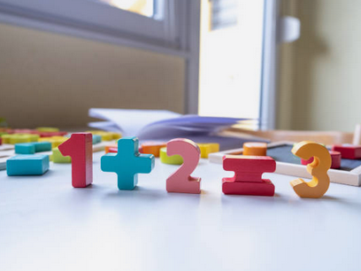

To understand the context of this problem, read the class #03 exercise sheet. After the deadline the problem stays open on Mooshak, but submissions no longer count towards your grade.
In this problem you should submit a function as described. Inside the function do not print anything that was not asked!
The name of the .py source file you submit to Mooshak should NOT start with a digit (you will get an error if you submit it like that).

Little Robert is just starting to learn how to sum numbers... Can you help him?
Write a function sum(a,b) that given two integers a and b returns their sum.
The following limits are guaranteed in all the test cases that will be given to your program:
| -1000 ≤ a, b ≤ 1000 | The numbers you will sum |
Example Function Calls
print( sum(1,2) ) print( sum(-3,3) ) print( sum(32,10) ) print( sum(7,8) ) print( sum(4,-7) )
Example Output
3 0 42 15 -3